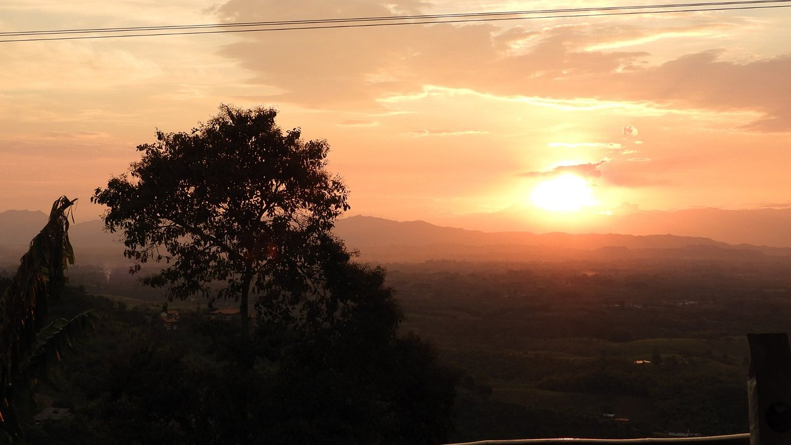

Algunos lugares...

La divisa de Don Juan
La Divisa de Don Juan es una finca cafetera familiar en Pereira, Colombia, que ofrece tours guiados. La finca es un importante productor de café y un área de conservación de la biodiversidad.

Alto Del Nudo
El Alto del Nudo es una reserva natural regional en la Serranía El Nudo, en el departamento de Risaralda, Colombia. Es un lugar de gran biodiversidad, con senderos ecológicos y miradores.

Alto Del Toro
El Alto del Toro es una vereda en Dosquebradas, Risaralda, Colombia. También hay una ruta de ciclismo y senderismo que lleva a este lugar.